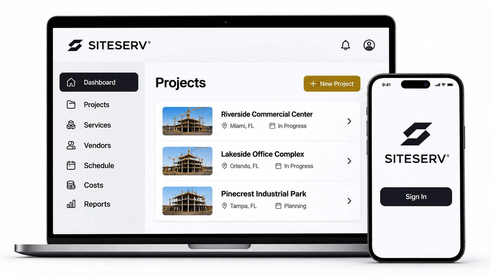

Project and site records
Keep project details, site locations, contacts, access instructions and operating information in one project context.
SITESERV brings the records and decisions behind temporary site services into one project-centered workspace—so teams can see what is needed, who is involved and what happens next.

Each service belongs to a project and site. Its provider, requirement, quotation, approval, order, schedule, documents, issues and costs stay connected as the work progresses.
Site A · Active construction
This is an illustrative layout showing the type of information SITESERV is designed to organize. It is not a live customer account or a representation of a production system.
The value is in keeping the service lifecycle together: the original requirement, the provider response, the approval, the delivery, the ongoing work and the final closeout.
Keep project details, site locations, contacts, access instructions and operating information in one project context.
Define category, location, quantity, specifications, dates, priority and internal responsibility before a provider is selected.
Organize existing providers, service categories, contacts, coverage information and relevant documents.
Request and record quotations, compare scope and terms, track responses and retain the decision history.
Record approval status, selected quotation, agreed service details, responsible parties and commercial commitments.
Coordinate requested windows, site access, provider confirmation, installation details and completion records.
Keep maintenance, servicing, requests, missed collections, replacements, changes and provider responses visible.
Keep supporting records with the service and distinguish quoted, approved, ordered and recorded costs.
When service details are spread across inboxes, spreadsheets and individual provider portals, it takes effort to establish the current picture. SITESERV is designed to keep the latest recorded status, responsible party and next action visible alongside the service history.
SITESERV is intended to sit alongside the project-management, accounting and procurement tools a construction business already uses.
Project and site records, service requirements, provider information, quotations, approvals, orders, schedules, changes, documents and service history.
Construction project management, enterprise procurement, accounting or ERP systems.
Temporary infrastructure supply, delivery, installation, servicing, maintenance and removal remain with the contracted provider.
Provider availability, technical execution, engineering advice and safety certification remain with the responsible qualified parties.
Bring a service coordination scenario and walk through how the records and workflow fit together.